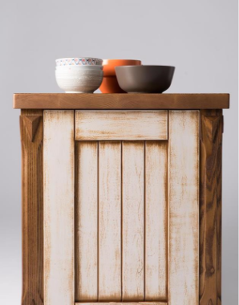

2018 AUG _ 16
正豪木業榮獲2018MIT台灣金選獎的肯定

仿古綠、融岩綠、水晶綠、橄欖綠，這可不是眼影或指甲油的色彩，而是實木門的漆色選項，個性化居家時代，連實木門板也得配合室內設計的主題與色系變化，增添美麗。
遇見你的100%櫃門
不同於水泥漆，可以借助電腦來調色，實木上漆需要配合木頭的原色，用木器塗料一層層堆疊，疊合出想要的染色效果，只能仰賴資深木作師傅的純熟技術，因材施「料」，針對不同木料的特色，染出不同的漆色。比方說，此次入選MIT臺灣金選的赤楊木，它的木頭紋路與毛細孔質地，就很適合做仿舊的復古廚櫃。
正豪木業有多達12種高級樹種，為愛護地球，有7種來自美國再生林，每種木料都能做出10種漆色變化，還有高達35 種的門板樣式。從小片的廚櫃門、浴櫃門，到大片的衣櫃門、房間門、穀倉門，都能客製化打造出獨一無二的門板。為了確保最後成品就是消費者心目中的100% 櫃門，在正式製作前，正豪木業會依照個別訂單的需求，提供完成疊色的木板樣品。

不脫榫不變型，才叫做好門
針對實木門容易受環境的乾溼度影響，產生變型、脫榫，甚至解體的問題，正豪研發出特殊的專利工法，在正常環境的使用下，讓它的產品不脫 榫不變形，甚至用到20 年也依舊完好。
為了確保消費者的安全，正豪使用高品質的木器塗料，連膠著劑都有講究，通過日本食品衛生無毒證明；最後製成的產品，也都定期檢送木材品質檢驗中心，成品的甲醛檢測結果，也優於臺灣與歐盟標準。
質的櫃門製作技術，讓正豪成為國內知名廚具公司的供應商，根植臺灣，正豪木業的負責人黃賜安衝勁十足說：「它雖然是傳統產業，但絕對不是夕陽產業。」 一扇好門，讓居家生活更有好顏色。
轉載自 << MIT台灣金選 >>官網